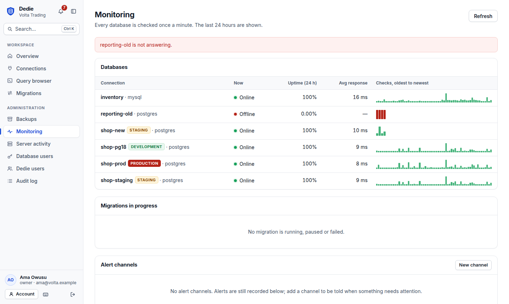
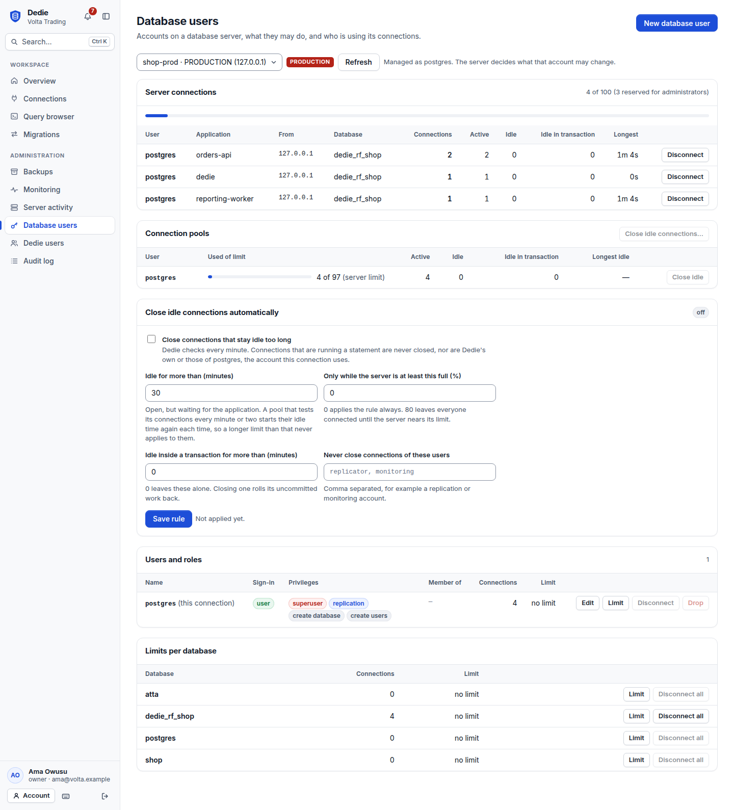

Move a live database without taking it down
Dedie upgrades a database to a new version, or moves it to another engine, while the old one keeps serving your application. It also gives your team a query browser, scheduled encrypted backups, monitoring with alerts, database user management and a full audit trail.

One tool for the life of a database
Everything runs on the same engine, behind the same access rules, whether you use the web interface, the command line or the desktop application.
Online migration
Copy a consistent snapshot, follow the replication log to stay in step, and switch over in a write pause measured in seconds. Pause and resume at any point, at database, schema or table level.
Continuous sync
Keep a second database following the first for as long as you like: a reporting copy on another engine, or MongoDB collections you can query in SQL.
Query browser
Tabs, a SQL editor that knows your tables, explain plans, saved queries, and a grid built for wide and long results. Open a table and edit its rows in place.
Backup and recovery
Logical and physical backups, full, differential or incremental, kept in a directory you choose or in S3-compatible object storage, encrypted by default. Schedules take them, verify them and delete old ones. Restore a whole chain, into a new database, or one table at a time.
Point-in-time recovery
Dedie receives a PostgreSQL server's write-ahead log as it is written. Rebuild the server as it was at any moment: a minute before a bad deployment, or a second before a table was dropped.
Monitoring and alerts
Every database is checked each minute. Uptime, response time and migration lag on one page and in Prometheus, with alerts to Slack, a webhook or email.
Database users and connections
Create database users, grant roles or a ready-made access level, cap connections per user or database, see which applications hold the connections, and disconnect them.
Server administration
Who is connected and what they are running. Cancel a query, end a session, change who owns a database, schema or table, and spot replication slots that hold WAL.
Built for organizations
Five roles, two-factor sign-in, API tokens, per-connection permissions, encrypted credentials, and a tamper-evident audit log of every statement and change.
Web, command line and desktop
One engine behind all three. Sign the command line in to your Dedie server and run migrations and backups from any machine or from CI.
Migration paths
Each path is covered by an end-to-end test that migrates a database under write load, pauses and resumes mid-stream, cuts over and compares the result.
| From | To | What moves | State |
|---|---|---|---|
| PostgreSQL 10 or newer | Any newer PostgreSQL | Tables, data, types, sequences, functions, views, indexes, constraints, triggers | Working |
| MySQL 5.6 or newer | Any newer MySQL | Tables, data, views, routines, triggers, events | Working |
| MySQL | PostgreSQL | Tables, data, keys, indexes and foreign keys, translated to PostgreSQL types | Working |
| PostgreSQL | MySQL 8.0 or newer | Tables, data, keys, indexes and foreign keys, translated to MySQL types | Working |
| MongoDB 4.0 or newer (replica set) | PostgreSQL | Every collection becomes a table that holds each document in full as jsonb, with the fields you choose lifted into typed columns | Working |
Every path can also run as a continuous sync that never cuts over. The PostgreSQL test runs version 16 to 18; the MySQL tests use MySQL 8.0 and the MongoDB test 8.0, and other versions of those two have not been exercised yet. Moving between engines does not translate views, routines or triggers, MongoDB indexes are not translated, and the preflight check lists every difference before anything is changed.
How a migration works
Your application keeps reading and writing the source until the last step. If source and target differ at the end, nothing is switched.
Preflight
Both databases are inspected without changing either. Anything that would block the migration, or change in meaning on the way, is listed before you start.
Schema
Tables and the objects they depend on are recreated on the target from the source's own definitions.
Snapshot
Every table is copied in parallel from one consistent point in time, and the replication position of that point is recorded.
Streaming
Changes made since the snapshot are applied in order. Each transaction is stored together with its position, so a crash or a restart never loses or repeats a change.
Cutover
The source is made read-only, the last changes drain, counters are synchronized and every table is compared. Then you point your application at the target.
A query browser with room to work
Open as many tabs as you need. The editor and the results share the window, and you decide how much each one gets.
- Browse and edit tables. Page through any table, filter it, and change a cell or add a row. Every edit is one audited statement that must touch exactly one row.
- Understand a query. Explain shows the plan; Analyze shows where the time went. Format tidies the SQL, and Cancel stops a statement that runs too long.
- Work with results. Sort, filter, and export what you see as CSV, JSON or SQL.
- Save and share. Keep queries for yourself or for the whole team.
- Read-only by default. Writes need permission and a deliberate switch.

Know when something needs you
Dedie checks every database once a minute and tells you when one stops answering, a migration falls behind or a backup fails.
- Uptime and response time for every connection over the last day.
- Alerts where you already look. Slack, Teams, a signed webhook or email, with a test button.
- Prometheus metrics and a health endpoint for your own dashboards and load balancers.

Manage who uses the database
Database accounts and the connections they hold, without writing the SQL by hand.
- Create users and roles with a generated password, read-only or read-write access, and role membership.
- Limit connections per user or per database, so one application cannot exhaust the server.
- Keep connection pools in check. See which user is at its limit and close idle connections by hand, or let a rule close them automatically.
- See who is connected by user, application and address, including sessions idle inside a transaction, and disconnect them.
- Passwords stay private. PostgreSQL receives a SCRAM verifier, never the password, and Dedie does not store it.

Know the state of every server
Connections show whether their server is answering and how quickly, and you can create what you need without leaving the page.
- Live status. Online or offline, with response time, checked every thirty seconds.
- Create databases, schemas and tables in any database on the server, and change who owns them.
- Restrict a connection to the people who should see it.
- Weak encryption is flagged. Connections that do not require TLS are marked.

Security you can explain to an auditor
Dedie holds the keys to your databases, so it is built to be trusted with them.
Encrypted at rest
Database passwords are sealed with AES-256-GCM under a per-secret key, wrapped by a master key you control. Backups are encrypted as authenticated chunks.
Roles and permissions
Owner, admin, operator, analyst and viewer, with connections that can be restricted to chosen people. The same rules apply to the web interface, the API, the command line and the desktop application.
Two-factor sign-in
Authenticator codes with recovery codes, which an organization can require of everyone, alongside a password policy and a list of your signed-in sessions.
API tokens
For scripts and CI. A token never has more than its creator's role, can expire, is stored only as a hash, and cannot create further credentials.
Tamper-evident audit log
Every sign-in, statement and change is recorded, and each entry is chained to the one before it. An edited or deleted entry is detected.
Safe by default
The server refuses to serve plain HTTP beyond the local machine, new connections require TLS, and sessions end when a password or role changes.
Get started
Download a release, or build from source. The server, the command line and the desktop application share one engine.
# build from source: Go 1.26+, Node 22+ git clone https://github.com/Eselase-Noble/Dedie.git cd Dedie make bin/dedie-server # http://127.0.0.1:8080 # from any machine: sign the command line in to your Dedie server dedie login https://dedie.example.com dedie migrate create --name "shop 16 to 18" --source prod-16 --target prod-18 --fence dedie migrate preflight <id> dedie migrate run <id> dedie migrate cutover <id> # nightly backups, keeping the last fourteen dedie backup schedule add --name nightly --connection prod-18 --cron "0 2 * * *" --keep-last 14
dedie-server
The web interface, the HTTP API and the workers that run migrations, scheduled backups and health checks. For teams.
dedie
The command line. Sign in to a Dedie server and run everything from your own machine or from CI, or use it on the server host to set an installation up.
Dedie Desktop
A JavaFX application around the same engine, for one person on their own machine, with native menus, downloads and shortcuts.
The full guide, including requirements for each database and everything that is not migrated, is in the README.